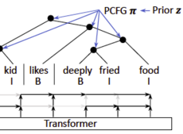
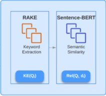
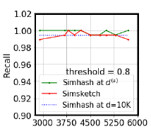
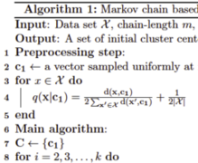
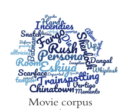

|
I am a Machine Learning Engineer at Electronic Arts. I am part of an R&D team where we leverage Machine Learning for problems in Character Animation (Motion Synthesis/Inbetweening, Inverse Kinematics, ML Deformers etc.). I studied MMath in Computer Science at the University of Waterloo, where I worked on Natural Language Processing under the supervision of Prof. Ming Li and Prof. Jimmy Lin. In Fall 2021, I defended my thesis titled, Unsupervised Syntactic Structure Induction in Natural Language Processing. During my time at UWaterloo, I was awarded the David R. Cheriton Scholarship and International Masters Award for Excellence. I was also fortunate to work as a research assistant with Prof. Lili Mou affiliated with Amii and University of Alberta. I am nominated for the 2021 Co-op student of the year award. Before that, I completed my Integrated Masters in Computer Science in 2019 from IIIT Bangalore, India. I was part of the Multimodal Perception lab, led by Prof. Dinesh Babu where I worked on Recommender Systems. I spent two wonderful summers working on machine learning at Centralesupelec, France (2018) and Murdoch University, Australia (2017). Email / Resume / Google Scholar / Linkedin / Github |
{kind=link}

|
I enjoy developing end-to-end ML systems for problems in NLP, Search-Retreival, and Character Animation. Broadly, the following research directions interest me: Natural Language Processing: How can we best exploit language models for problems like semantic search and syntactic structure induction? Search and Retrieval: How can we build efficient and scalable algorithms for ad-hoc retrieval, recommender systems, and nearest neighbour search? Character Animation: Can we impute ideas from NLP to develop 'universal' pose representations to solve complex character control tasks? How can we develop automatic metrics for character motion that correlate well with human judgement? |
|  |
Anup Anand Deshmukh, Qianqiu Zhang, Ming Li, Jimmy Lin, Lili Mou Accepted as a Findings paper at EMNLP, 2021 |
|  |
Anup Anand Deshmukh, Udhav Sethi The updated manuscript is to appear at TREC, 2022 |
|  |
Rameshwar Pratap, Anup Anand Deshmukh, Pratheeksha Nair, Anirudh Ravi Accepted as a main conference paper at ACML, 2020 |
|  |
Rameshwar Pratap, Anup Anand Deshmukh, Pratheeksha Nair, Tarun Dutt Accepted as a main conference paper at ACML, 2018 |
|  |
Anup Anand Deshmukh, Pratheeksha Nair, Shrisha Rao Accepted as a SAREC workshop paper at ICDM, 2018 |
|
Website template from Jon Barron. |